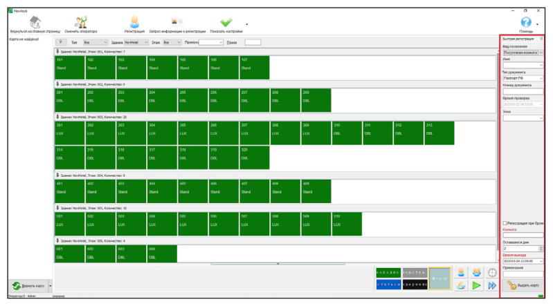
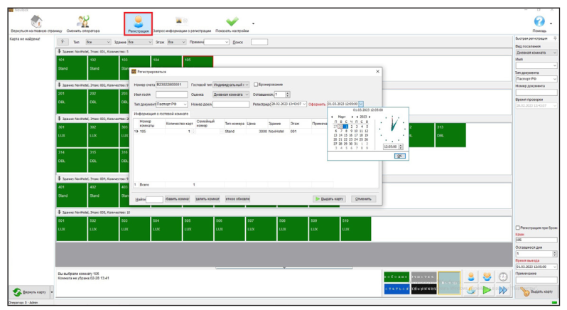
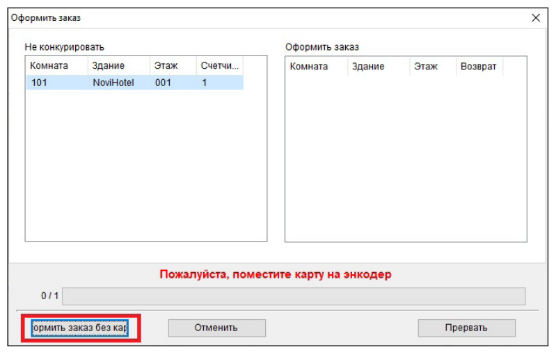

Регистрация гостей
Руководство пользователя · Электронные замки Novilock™ Classic Slim

РЕГИСТРАЦИЯ ГОСТЕЙ
Быстрая регистрация В таблице номеров нужно открыть Показать настройки, поставьте галочку на Быстрая регистрация справа откроется окно Быстрая регистрация, окно останется открытым в правой части экрана по умолчанию пока вы не снимите галочку в настройках. Положите карту на энкодер (программатор карт), укажите номер комнаты, выберите Тип поселения (по умолчанию Дневная комната это посуточное поселение), укажите Имя гостя, Тип документа и Номер документа далее выберите дату выезда и нажмите. Выдать карту, поселение выполнено. После поселения иконка номер измениться (Рис. 38).
Обычная регистрация Положите карту на энкодер, выберите номер, далее нажмите Регистрация или дважды кликните левой кнопкой мыши по номеру, откроется окно регистрации. Выберите Тип поселения (по умолчанию Дневная комната это посуточное поселение), укажите Имя гостя, Тип документа и Номер документа далее выберите дату выезда, нажимаем Выдать карту, поселение выполнено. Тут вы можете указать сразу несколько номеров для поселения, указать количество карт для выпуска, добавить/удалить дополнительные номера.

Регистрация в несколько номеров (Семейный номер) Регистрация в несколько номеров (Семейный номер) Эта карта будет открывать несколько номеров, т. е. которые вы добавите в список семейных. Для этого нажмите в окне Регистрация на иконку Семейный номер, выберите номер который, хотите добавить в окне Доступные номера и нажмите – номер должен появиться в окне Выбрано, если нужно добавить еще номера повторите добавление. Далее нажимаем ОК. Укажите количество карт для поселения и нажимаем Выдать карту. После поселения иконки номеров изменяться. Гостевые карты становится недействительной после наступления времени выезда, карта не будет открывать замок с просроченной датой поселения! Для продления поселения гостю нужно будет подойти на ресепшен для перевыпуска карты на новую дату выезда.
Групповая регистрация Положите карту на энкодер, выберите номер, нажмите Регистрация или дважды кликните левой кнопкой мыши по номеру, откроется окно регистрации. Выберите Тип поселения. Выберите гостевой тип Групповой гость. Выберите номера для поселения нажав Добавить номер указателем (вправо/влево) переместите номера которые нужны в графу Выбрано также можно номер переместить обратно в графу Доступные комнаты если вы ошиблись. Далее нажмите кнопку ОК. Измените количество карт для каждого номера, чтобы сделать несколько карт для каждого выбранного номера. В нижней строчке будет указано общее количество карт для Группового поселения. Введите другую соответствующую информацию о регистрации, нажмите кнопку выдать и пропускайте пустые карты через энкодер, пока не осуществится регистрация во все выбранные номера.

Регистрация с почасовой оплатой Положите карту на энкодер, выберите номер, далее нажимаем Регистрация или дважды кликните левой кнопкой мыши по номеру, откроется окно регистрации. Выберите тип поселения Почасовая комната укажите часы прибывания и количество карт, нажимаем Выдать карту, поселение выполнено (Рис. 39). Изменение времени действия каты Положите карту на энкодер, выберите номер, далее нажмите Регистрация или дважды кликните левой кнопкой мыши по номеру, откроется окно регистрации и выберите Продлить, укажите новое время выезда гостя, нажмите ОК для завершения действия. Второй вариант нажмите правую кнопку мышки, выберите раздел Изменить дату, укажите новое время выезда гостя, нажмите ОК. В карте гостя будет перезаписано время выезда, а в графе время выезда появится новое время (Рис. 40).
Выезд без карты Выберите номер который нужно освободить, далее нажмите правую кнопку мышки, выберите раздел Выезд без карты, подтвердите действие, нажмите ДА. Номер будет освобожден, переведен в статус Комната не убрана. Примечание: это действие не может заблокировать утерянную гостевую карту. Чтобы утерянную карту нельзя было использовать для открытия номера, нужно, чтобы замок считал новую карту гостя (Рис. 41).